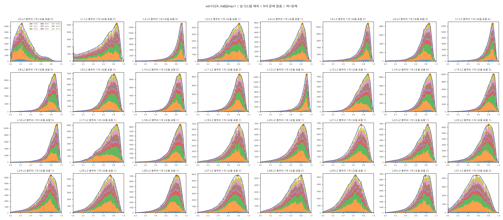
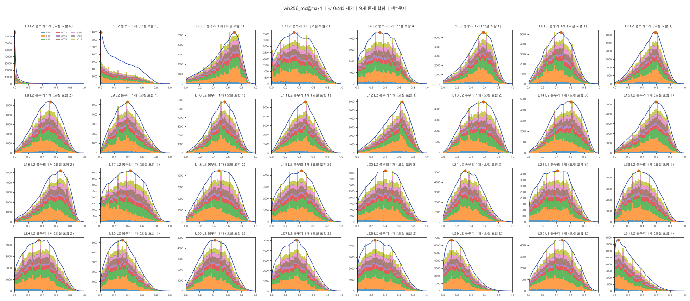
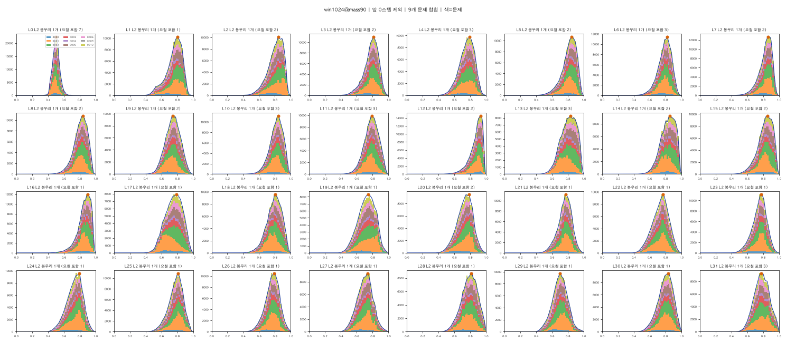
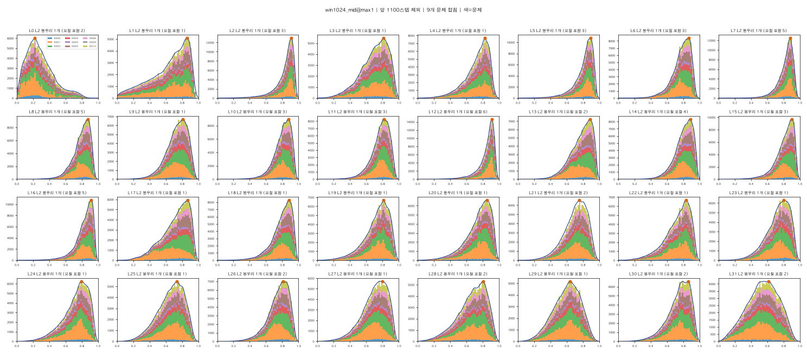
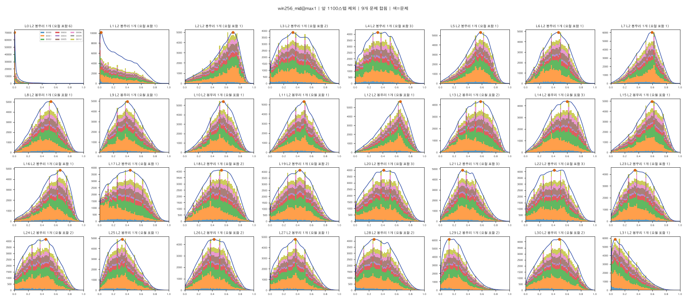
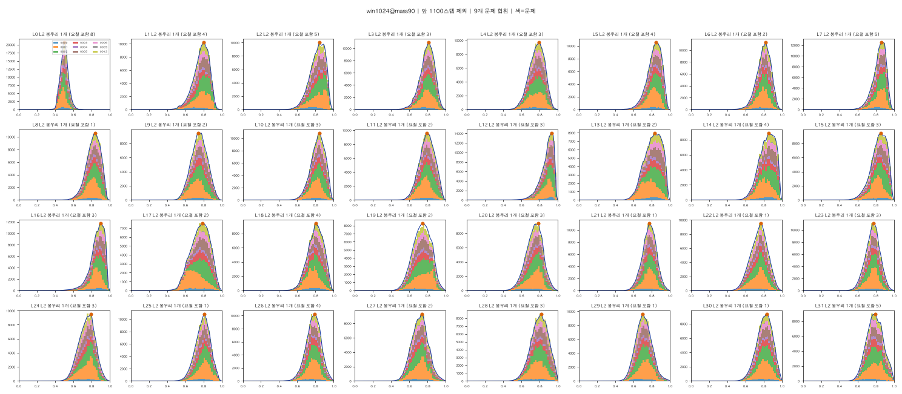

레이어마다 9개 문제를 합친 희소도 분포 (KDE Scott x1, 봉우리다움 L2=(0.05, 0.05, 0.3))
막대는 문제별로 색을 나눈 누적 히스토그램(어느 문제에서 온 질량인지), 선은 합친 KDE, 주황 점은 L2 봉우리, 초록 점선은 골. 제목이 빨간 레이어는 L2 봉우리 2개 이상.
win1024_mid@max1 | 앞 0스텝 제외 — L2 정확히 3봉 레이어 없음 (깨끗한 것 없음), ≥2봉 없음

win256_mid@max1 | 앞 0스텝 제외 — L2 정확히 3봉 레이어 없음 (깨끗한 것 없음), ≥2봉 없음

win1024@mass90 | 앞 0스텝 제외 — L2 정확히 3봉 레이어 없음 (깨끗한 것 없음), ≥2봉 없음

win1024_mid@max1 | 앞 1100스텝 제외 — L2 정확히 3봉 레이어 없음 (깨끗한 것 없음), ≥2봉 없음

win256_mid@max1 | 앞 1100스텝 제외 — L2 정확히 3봉 레이어 없음 (깨끗한 것 없음), ≥2봉 없음

win1024@mass90 | 앞 1100스텝 제외 — L2 정확히 3봉 레이어 없음 (깨끗한 것 없음), ≥2봉 없음
